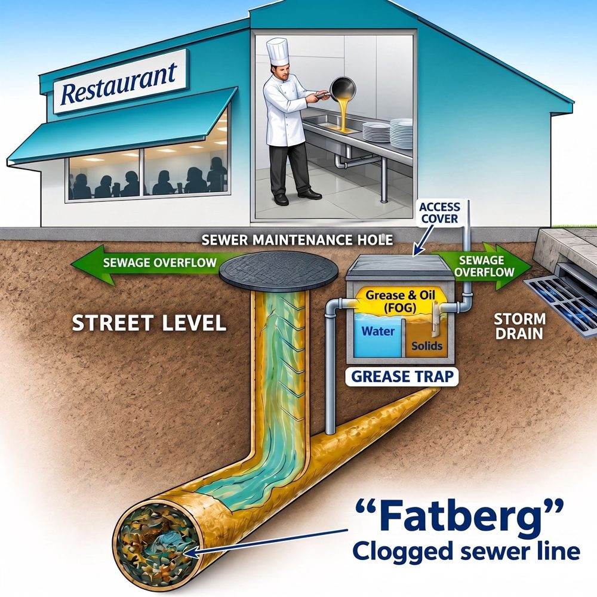
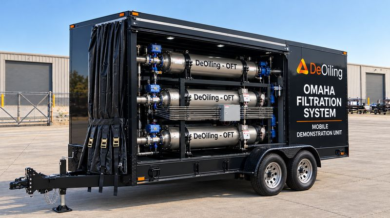
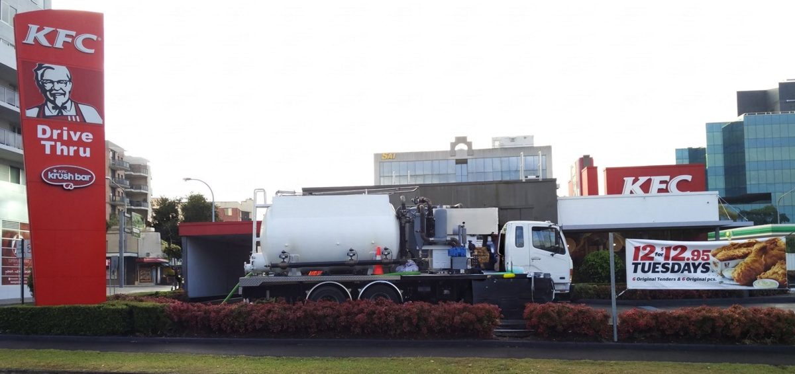

Stopping Fat, Oil, and Grease Before It Reaches the Ocean.
DeOiling recovers FOG and hydrocarbon oils from wastewater using patented, water authority approved technology that transforms waste into tradable commodities, carbon credits, and onsite power generation.
Every year, tonnes of FOG slip past treatment and into the sea.
Coastal wastewater plants were not built to catch all of the fat, oil and grease that arrives in sewage. What passes through ends up in the ocean.
- It damages coral reefs and accumulates in mangrove sediments.
- FOG feeds “dead zones” starved of oxygen, and these have increased 45x since the 1960s.
- It builds into fatbergs that block sewers, and has washed up as mystery debris balls on Sydney beaches.

We tackle FOG at two points in the system.
Both use the same patented technology, approved by water authorities.
Upstream: grease traps
We capture FOG at commercial grease traps before it enters the sewer, keeping it out of the network from the start. We process it and collect the used oil.
Downstream: treatment plants
A passive Omaha Filter System, built from Omaha Filter Tubes (OFTs), removes FOG at wastewater treatment plants by sidestream and outfall.
Currently in negotiation with a major water authority- Recovered FOG is a resource, not just a waste: it can be converted into energy.
- Captured before it reaches ocean outfalls, FOG can power electricity production instead of polluting our beaches.

Concept render

PumpFree Energy trialSeparation with DeSorb 2013 - 2025
DeSorb: a sorbent that attracts oil and repels water.
DeSorb is a proprietary copolymer, independently validated by the University of Sydney's School of Chemical Engineering.
Patented in Australia, the United States, Canada and China.
- Sorbs up to 6.1 g of oil per gram of material.
- Reusable: regenerated by compression and vacuum, with no degradation.
- Performs even better on used, degraded oils.
- Passive operation, with no chemicals added.
- Can even be used in place of activated carbon in some cases.
- Fundamentally disrupts the economics of Oil & Water separation.
Proven in 90-day field studies and commercial use from 2013 to 2025.
PumpFree Energy trialled the technology in the grease trap market. The results were validated and approved by multiple Australian water authorities.
What comes next.
- Scale up and adapt to concentration range at sewage treatment plants or pumping stations.
- A 1.8 MW power unit that uses recovered FOG as fuel to generate electricity, powering 2,500+ homes around the clock and creating $1.5M+ in annual energy savings.
- Rollout to other water authorities in Australia and overseas, with licensing and manufacturing partners.
The team
Bruce Sands
Founder and inventor of DeSorb
Grant Robinson
Business executive and angel investor
Bob Jeralds
Co-inventor and operations engineer
Water authority, grease trap operator, Gas & Oil company or potential partner?
Tell us about your site or your interest in licensing and manufacturing, and we will get back to you.